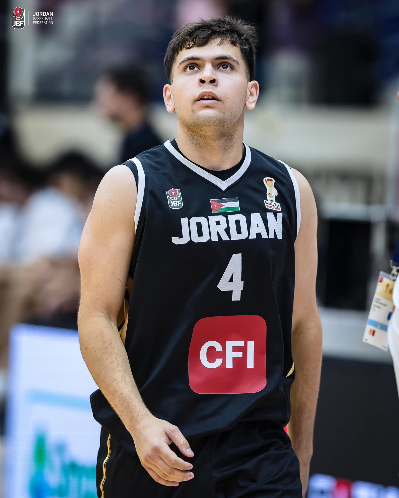
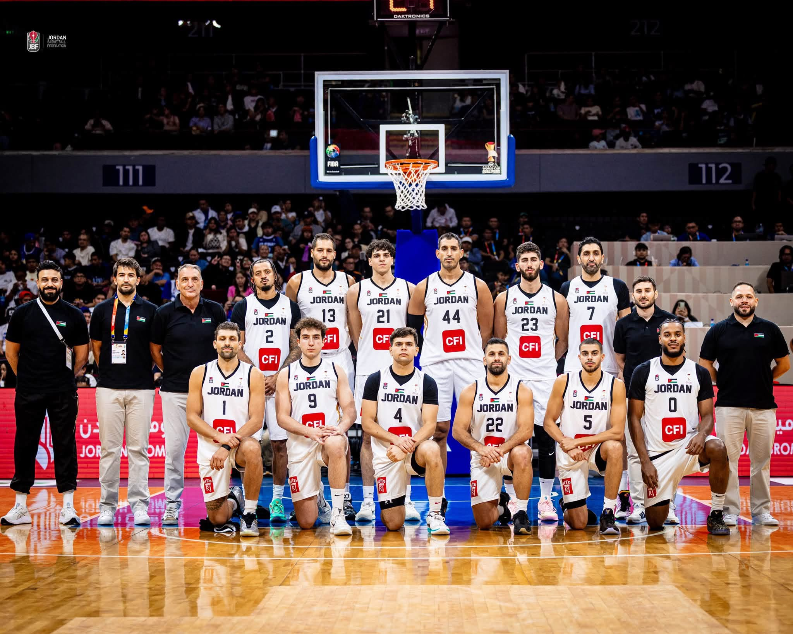
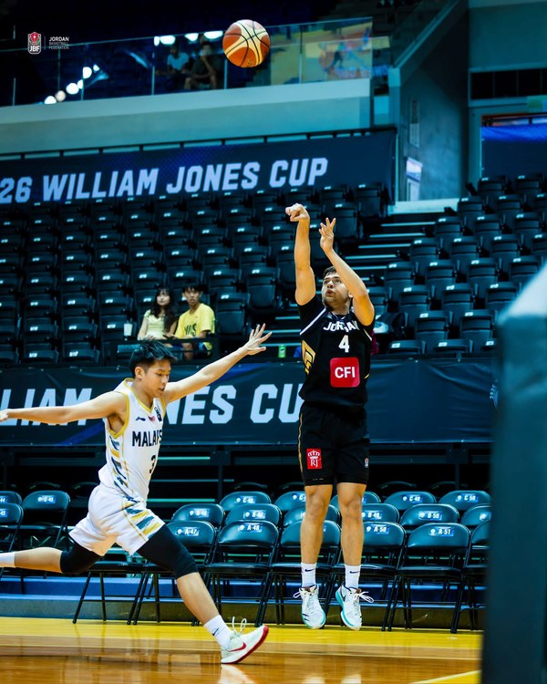

My Basketball Career

Basketball and Representation
Basketball has been a major part of my life and personal development. I play guard for Illinois Tech and have represented Jordan in international basketball. Competing at different levels has pushed me to become a better teammate, a better competitor, and a more disciplined student-athlete. I have learned that improvement comes from consistent work, preparation, and the ability to respond after both good games and difficult games.
Representing Jordan is especially meaningful to me. Wearing the national team uniform means competing for something larger than myself and being part of the history of Jordanian basketball. My international experience has included the FIBA U18 Asia Cup 2024, the FIBA U19 Basketball World Cup 2025, and the Jordan senior national team.
FIBA U18 Asia Cup 2024
One of the biggest moments of my youth international career came at the FIBA U18 Asia Cup 2024 in Amman, Jordan. Jordan faced South Korea in the quarterfinals in a game that ended 73-69. I scored 21 points, made 5 of 7 three-point attempts, and grabbed 5 rebounds. I was named Player of the Match, and the result helped Jordan qualify for the FIBA U19 Basketball World Cup. FIBA reported that the victory ended a long wait for Jordan to return to the U19 World Cup and that my three-point shooting was a major part of the win.
Across the U18 Asia Cup, I averaged 9.3 points, 2.9 rebounds, and 1.1 assists per game. I was also one of Jordan's leading three-point shooters in the competition. The tournament showed me the importance of confidence, preparation, and being ready when an opportunity comes in a high-pressure game.

FIBA U19 Basketball World Cup 2025
In 2025, I competed with Jordan at the FIBA U19 Basketball World Cup in Switzerland. This was an important opportunity because Jordan returned to the global U19 stage for the first time since 1995. Playing against teams from around the world gave me experience with a different level of size, speed, physicality, and competition.
At the U19 World Cup, I averaged 11.5 points, 3.7 rebounds, and 0.8 assists per game across six games. I also averaged 28.3 minutes per game and made 37.5 percent of my three-point attempts. One of my strongest individual games came against the Dominican Republic on July 6, when I scored 18 points and shot 5 of 8 from three-point range.
That tournament taught me how important it is to stay composed against elite competition. It also helped me understand the areas I still need to improve, especially as I continue developing from a shooting guard into a more complete guard who can contribute with the ball in my hands and without it.

Senior National Team
I have also moved into the senior level of Jordanian basketball. I made my senior national team debut in the FIBA Basketball World Cup 2027 Asian Qualifiers. Playing with and against experienced senior professionals has given me a new perspective on the game. The senior level requires stronger decision making, physical preparation, communication, and consistency.
My goal is to continue earning opportunities with the senior national team and to become a dependable player who can contribute in multiple ways. I want to become a guard who can shoot, defend, make decisions, create for teammates, and play with discipline. I also want to continue improving my athleticism and conditioning so that I can perform effectively for long stretches of a game.
Illinois Tech Basketball
Playing college basketball at Illinois Tech has added another important chapter to my development. Being a student-athlete requires me to balance practices, games, travel, training, assignments, projects, exams, and other responsibilities. The experience has made me more organized and has taught me how to manage my time when there are competing priorities.
College basketball has also helped me understand the importance of leadership. A team cannot rely on one person to do everything. Every player has a role, and success depends on communication, trust, effort, and accountability. Those lessons are useful beyond basketball because the same qualities matter when working on technology projects with other people.
What Basketball Has Taught Me
Basketball has taught me discipline because improvement requires daily effort. It has taught me resilience because mistakes and losses are part of the game. It has taught me communication because teammates need to understand each other quickly. It has also taught me that confidence comes from preparation. These lessons carry over directly into school and my future career.
My long-term goal is to keep developing both as a basketball player and as a professional. I want to continue representing Jordan with pride, contribute to my college team, and use everything I learn from competition to become a better student, leader, teammate, and future IT professional.
Basketball Video
The video below is part of my basketball profile and shows a short example of my on-court experience.
Selected Basketball Accomplishments
- Jordan Senior National Basketball Team player.
- FIBA U19 Basketball World Cup 2025 participant.
- FIBA U18 Asia Cup 2024 participant.
- Player of the Match against South Korea in the FIBA U18 Asia Cup quarterfinal.
- 21 points, 5 rebounds, and 5-of-7 shooting from three against South Korea.
- 11.5 points and 3.7 rebounds per game at the FIBA U19 Basketball World Cup 2025.
- 9.3 points, 2.9 rebounds, and 1.1 assists per game at the FIBA U18 Asia Cup 2024.
- Best 3-Point Shooter in the Arab Cup 2024.
Sources
FIBA player statistics: Omar Salman player profile
FIBA U18 Asia Cup game report: Jordan end Korea's reign as champs, barge into U19 World Cup
Illinois Tech Athletics player profile: Omar Salman - Men's Basketball